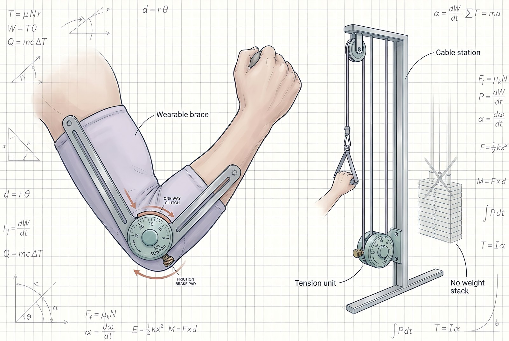
Resistance Without a Weight
A dial-set, direction-dependent friction unit for rehabilitation braces and gym machines: the mechanism, an open model, and where friction resistance beats iron and elastic and where it does not
Abstract
Training resistance comes mostly from lifted iron or stretched elastic. Both store energy, so both can fall or snap back, and neither can be set to an exact, repeatable number in small steps. This paper describes a third source, developed under the name Newhab: a compact rotary unit in which a one-way clutch couples a brake drum to the shaft in one direction only, a friction member presses on the drum, and a self-locking worm sets and holds that pressure from a dial graduated in pounds. One unit resists one direction and frees the other; an outer and an inner brake in one unit, or two oppositely rigged units on either side of a joint, resist both directions to independently set values. The same unit, about the size of a bottle cap, can be worn in an elbow or knee brace, or built larger and bolted to a machine frame to drive a cable in place of a weight stack.
We give an open model of the mechanism against a dumbbell and an elastic band. At the elbow, 5 lb at the grip is 7.3 N·m, which on a 12 mm drum takes 1,750 N of shoe force. The unit's resistance is flat across a curl and independent of speed, and at the same peak it asks 1.38 times a dumbbell's work per lift. Stopped mid-lift, a dumbbell sheds 10 to 23 J and a band 4 J; the unit 0.13 J. Against a 200 lb weight stack, a gym unit is about 26 times lighter and 41 times smaller. The model also finds the costs. Friction cannot load a muscle eccentrically. Every joule becomes heat: three sets of 15 at 5 lb take a 30 g drum to about 67 °C, and a gym unit needs a drum of about 1 kg. The dial sets preload, not force, so a ±15% change in friction moves a 5 lb reading by ±12 oz.
No prototype exists. Every number comes from a published model with stated assumptions, and the paper ends with the tests that would confirm or refute it.
Keywords: resistance training, rehabilitation, friction brake, one-way clutch, worm gear, joint brace, weight stack, eccentric training
- 1. Introduction
- 2. Related work
- 3. The mechanism
- 4. Three architectures
- 5. From dial to pounds
- 6. The brace and the machine
- 7. Stopping mid-repetition
- 8. Resistance across the range
- 9. What friction cannot do: the lowering phase
- 10. Heat
- 11. How true is the dial?
- 12. Mass, volume and the case for tension weights
- 13. Limitations and evaluation plan
- 14. Conclusion
- References
1. Introduction
Muscle is built and rebuilt by working against an opposing force, and the force has almost always come from one of two places: a mass lifted against gravity, or an elastic element stretched [1, 2]. Each has a character that follows from its physics. A weight resists only upward motion, and how hard it resists depends on the angle of the limb, because gravity acts on the weight through a moment arm that changes as the joint turns. An elastic band resists more the further it is stretched. Both store the energy the user puts into them and give it back: the weight on the way down, the band as it shortens. That stored energy is what makes the lowering phase of a lift work the muscle as it lengthens, and it is also what makes a dropped dumbbell or a released band dangerous [3].
A third family has grown up beside them: resistance made mechanically or electronically, with no lifted mass. Isokinetic dynamometers hold the limb to a set speed [4]; flywheel devices store and return kinetic energy [5, 6]; pneumatic and vacuum-cylinder machines have flown on the International Space Station [7]; motor-driven robotic devices are established in rehabilitation [8]; and friction-belt cycle ergometers have set the load in exercise laboratories for decades [9]. The background of the application calls this family tension or "digital" weight. Most of its members are large, expensive or need mains power.
This paper describes a small, purely mechanical member of that family, developed under the name Newhab: a friction brake on a drum, made to act in one direction by a one-way clutch, its pressure set and held by a worm and read on a dial in pounds (Figure 1). It stores essentially no energy, so the user can stop anywhere and nothing falls or snaps back. It can be worn in a joint brace or bolted to a gym machine where the weight stack would be.
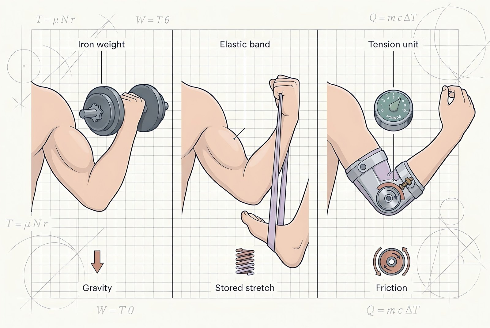
The question this paper addresses is whether resistance training's future lies in such "tension weights" rather than in lifted mass. Rather than assert an answer, we give a small model for each property that matters: the force the unit must make, its resistance across a curl, what is released when the user stops, what friction cannot do, heat, the truth of the dial, and mass and space. We publish the model and say plainly where the answers are unfavourable.
2. Related work
Forms of resistance. Frost, Cronin and Newton compare gravity, elastic, isoinertial and other resistance by the force, velocity and power they produce [2]; McMaster and colleagues review variable resistance [3]; Uchida and colleagues measure clinical elastic bands [15]. Hislop and Perrine set out the isokinetic concept [4]. Berg and Tesch built a gravity-independent flywheel ergometer for spaceflight [5], whose eccentric overload is reviewed in [6]; Loehr and colleagues report training on the vacuum-cylinder device of the International Space Station [7]; Maciejasz and colleagues survey motor-driven rehabilitation devices [8]; and Maxwell and colleagues calibrated friction-belt cycle ergometers [9].
Concentric and eccentric work. A muscle works concentrically when it shortens under load and eccentrically when it lengthens under load. Meta-analyses find eccentric training at least as effective as concentric training for strength and mass [10, 11], and eccentric loading has an established place in rehabilitation [12, 13]. This matters for Section 9, because a friction brake cannot produce it.
Strength curves. The torque a joint can produce varies with its angle. Kulig, Andrews and Hay review these strength curves [14]; for the elbow flexors the curve peaks in mid-range and is lower near full extension. We use a shape of that kind, labelled as an illustration, in Section 8.
Resistance at a worn joint. Airy and Kadavy describe a two-arm exercise device with two one-way roller clutches, each with its own friction belt and setting [21]. Knoth [22] and Longo and colleagues [23] use hydraulic resistance with separate flexion and extension settings. Tran [24] and Cersonsky [25] squeeze friction surfaces with a threaded knob, resisting both directions equally. DeRoyal uses a non-backdrivable worm to position a joint, not to set a resistance [26]; Ultraflex uses a spring [27]; Krishnan and colleagues use a speed-dependent eddy-current brake [28]. Fishing-reel drags combine a friction brake, an anti-reverse clutch and a dial [29]. Elastic garments that resist joint motion are described by Paulos and Nelson [30], New York University [31] and Tau Orthopedics [32].
Brakes. Drum, shoe and band brake design is covered by Limpert [16] and, for clutches, brakes and worm gearing in general, by Budynas and Nisbett [19]. Blau reviews friction materials and how their friction coefficient changes with temperature and wear [17]. Armstrong-Hélouvry, Dupont and Canudas de Wit survey static friction, the drop to kinetic friction, and stick-slip [18]. Limits for skin contact with hot surfaces are given in ISO 13732-1 [20].
| Source | Varies with | One direction only | Stores energy | Loads lowering phase | Needs power | Wearable |
|---|---|---|---|---|---|---|
| Free weight, weight stack [1, 2] | Joint angle (gravity) | Yes, upward | Yes | Yes | No | Small weights |
| Elastic band or garment [3, 15, 30–32] | Stretch | No | Yes | Yes | No | Yes |
| Flywheel [5, 6] | Acceleration | No | Yes (kinetic) | Yes | No | No |
| Isokinetic or motorized [4, 8] | Program | Programmable | No | If motor drives | Yes | Rarely |
| Eddy-current brace [28] | Speed | With clutch | No | No | Field only | Yes |
| Hydraulic brace [22, 23] | Speed | Per valve | No | No | No | Yes |
| Threaded friction brace [24, 25] | Nothing (flat) | No, both equal | No | No | No | Yes |
| Worm-set friction unit (this paper) | Nothing (flat) | Yes, or both set separately | No | No | No | Yes, and machine-mounted |
3. The mechanism
The unit has five working parts on one axis: a shaft, a one-way clutch, a brake drum, a friction member, and a worm adjuster with a dial (Figure 2). The exploded view in the application enumerates twenty components: support arms, housing, gear keeper, turning knob, turning cover, dial, metal block, pillar, shaft, brake material, worm gear, worm bolt, one-way clutch, metal plate, washer, spring, retaining rings and screws. The materials given as examples are glass- or carbon-filled polyamide, zinc alloy, ABS, and stainless and spring steels, scaled to the host: a small unit for a brace and a larger, more robust one for a machine.
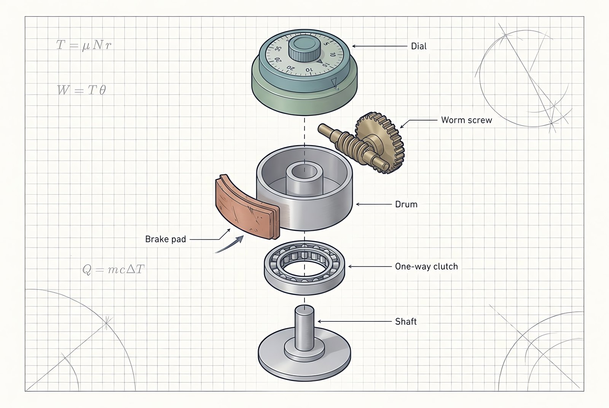
One-way operation. The clutch, which may be a sprag clutch, a roller clutch or a ball-type one-way bearing, sits between the shaft and the drum. Turned one way, the clutch overruns: the drum stays still and the shaft turns freely. Turned the other way, the clutch locks the drum to the shaft, and the friction member resists the motion (Figure 3). The user therefore feels the set resistance in the working direction and little or none on the return.
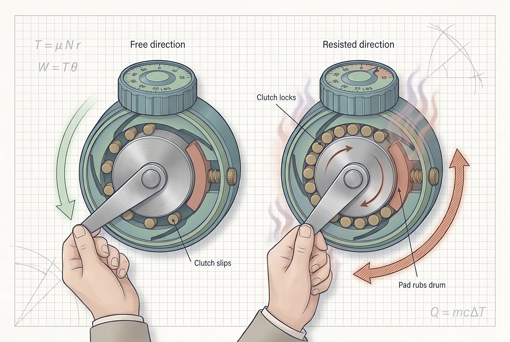
Setting and holding. The friction member, a shoe, band or pad, bears radially on the drum's cylindrical surface. It is pressed there by a follower, a cam or threaded follower, that the worm wheel advances; the worm wheel is turned by the worm bolt, and the worm bolt by the knob (Figure 4). A worm and wheel of low lead angle cannot be turned from the wheel side, so the force with which the pad bears on the drum, the preload, stays where the knob put it. The application gives a reduction of about 30:1 to 100:1 as an example and illustrates a large turn of the worm producing about an eighth of a turn of the wheel. A spring retracts the friction member when the setting is reduced. The claimed arrangement places the worm outside the path through which the resisted rotation reaches the brake, so force at the shaft acts on the drum and pad but cannot turn the worm. A dial on the housing displays the setting, graduated in units of force such as pounds; in digital forms the reading may instead appear on a small screen or a paired phone.
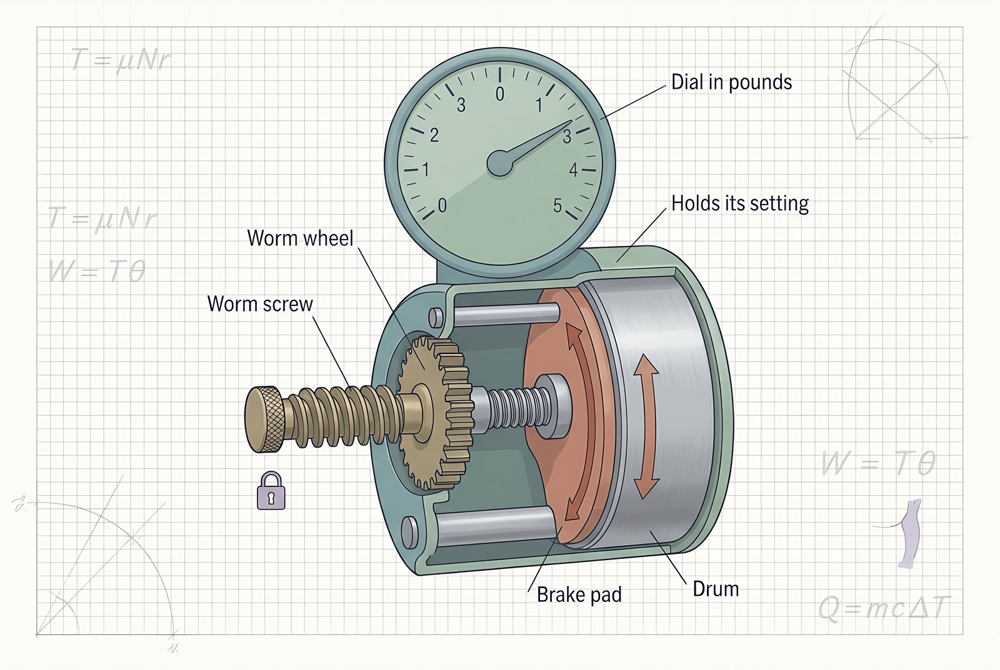
Holding anywhere. Friction stores essentially no energy and exerts no restoring force, so if the user stops, the unit stops: the load cannot drop or recoil. Section 7 puts numbers on this safety property and on one qualification.
Alternatives in the application. The worm may be replaced by another self-locking transmission (planetary set, low-helix lead or ball screw, harmonic drive, ratchet and detent); the knob may be supplemented by a processor-controlled motor with sensors and an app; and the brake may be supplemented or replaced by a magnetically actuated element, which the application notes is generally speed-dependent and may allow some back-driving. This paper models the manual friction unit only.
4. Three architectures
The application arranges the basic unit in three ways.
A. Single unit, single direction. One clutch, one drum and an external shoe pressing inward. It resists one direction and frees the other. This is the simplest form and the one Figure 3 shows.
B. Single unit, both directions. An external brake presses radially inward on the outer surface of the drum and an internal, "inside-out" brake presses radially outward on its inner surface (Figure 5). Each friction member has its own follower and its own worm, and each is associated with its own one-way clutch, the two clutches oriented oppositely and nested one inside the other about the common axis, joined by a shared wall or rim. The external member is then effective in one direction and the internal member in the other, so one compact unit gives two independently set resistances. In an alternative form, the inner clutch and its drum are extended outward to present their own outer surface, so both directions are braked from outside on two coaxial drums.
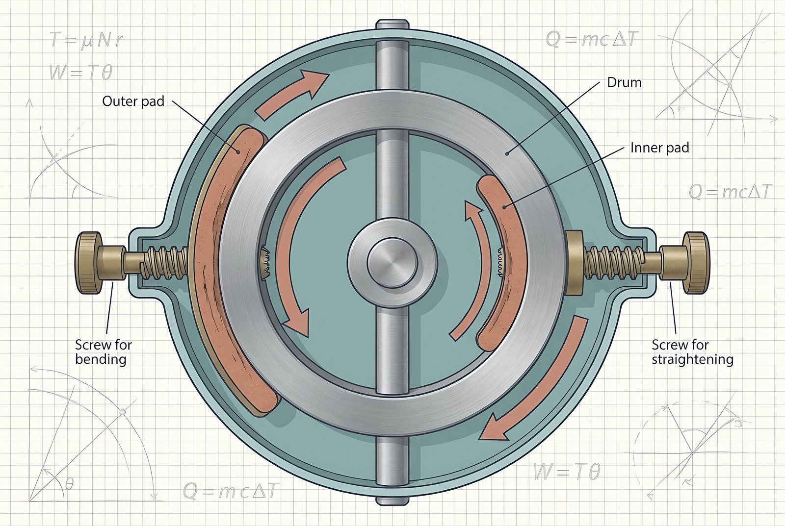
C. Two units about one pivot. Two complete units are placed on opposite sides of a joint and oriented oppositely: one resists the in-motion and frees the out-motion, the other resists the out-motion and frees the in-motion (Figure 6). Each direction then has its own knob and its own dial. The two units may also be stacked coaxially back to back, one reversed relative to the other, at a single location. The application calls a single unit a "mechanism" and the oppositely rigged pair a "device".
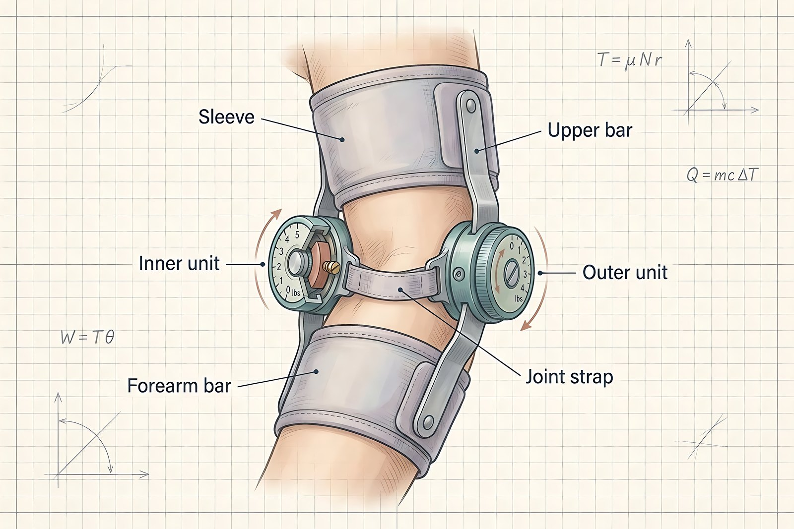
For modelling, what matters is whether the return is free (A) or braked (B and C), and whether both directions heat one drum (B) or two (C); see Sections 9 and 10.
5. From dial to pounds
Torque. A shoe pressed on a drum of radius r with a normal force N and a kinetic friction coefficient μ resists rotation with a torque T. At a joint, what the user feels as a "pound" is that torque divided by the distance L from the joint axis to the hand:
We take L = 0.33 m, the elbow axis to the centre of a grip. A dial reading of 5 lb then means the torque of a 5 lb dumbbell held with the forearm level: 7.34 N·m. The site for the brace gives a range of 0 to 5 lb, and we use that range. The application gives no drum size; it says the unit is about the size of a bottle cap. We assume a braking radius of 12 mm and μ = 0.35, a typical value for a dry organic pad on steel [17].
Equation (1) shows the first pressure on a small unit. To make 7.34 N·m on a 12 mm drum, the shoe must press with 1,748 N, about 393 pounds-force; over an assumed 10 × 15 mm shoe that is 11.7 MPa of contact pressure, high for a friction material. A drum of 15 or 18 mm, the "slightly larger if required" the application allows, brings the force down to 1,398 or 1,165 N. The friction member may also be a band. For a band wrapped an angle θ round the drum, the tight and slack tensions differ by the factor eμθ, and
With 270° of wrap, eμθ = 5.20, and the slack end needs only 146 N for 5 lb, twelve times less than the shoe. The price is sensitivity: a band brake's torque moves 2.04 times as much as μ does, which matters for Section 11.
Turns to pounds. The knob turns the worm; i turns of the worm turn the wheel once; one turn of the wheel advances the follower by a rise h; and the pad, shoe and housing, compressed together, push back with a stiffness K. After n knob turns from first contact, the reading at the hand is
The application fixes none of h, K or the drum radius, so we choose values that put the whole 0 to 5 lb range in an eighth of a turn of the wheel, as the application's worm figure illustrates: i = 40, h = 7.0 mm per wheel revolution, and an assumed K = 2.0 N/µm. The result is one pound per knob turn, and 0.45 oz per 10° of knob.
| Dial (lb at the grip) | Elbow torque | Shoe force | Shoe pressure | Band slack tension, 270° wrap | Knob turns from contact | Follower travel |
|---|---|---|---|---|---|---|
| 1 | 1.47 N·m | 350 N | 2.3 MPa | 29 N | 1.0 | 0.175 mm |
| 2 | 2.94 N·m | 699 N | 4.7 MPa | 58 N | 2.0 | 0.350 mm |
| 5 | 7.34 N·m | 1,748 N | 11.7 MPa | 146 N | 5.0 | 0.874 mm |
Holding the setting. At 5 lb the follower pushes back on the wheel with 1.95 N·m. Whether the worm holds against that depends on its lead angle λ and the friction μw between worm and wheel. With a normal pressure angle φn, a worm cannot be driven from the wheel when
A single-start worm of module 0.5 mm on a 6 mm pitch diameter has λ = 4.76°. With μw from 0.10 (lubricated) to 0.25 (dry polymer wheel) the friction angle is 6.1 to 14.9°, so the worm locks in every case, though at 0.10 the margin is under 1.5°, thin for a part shaken and loaded thousands of times [19]. Self-locking costs efficiency, 23 to 44% here, yet the knob needs only 0.11 to 0.21 N·m at full scale, a light twist of the fingers.
At the gym. On a cable machine the reading is simpler: the force at the handle is the torque divided by the radius of the cable spool on the unit's input. With an assumed 50 mm spool and an 80 mm drum, 20, 50, 100 and 200 lb at the handle need 159, 397, 794 and 1,589 N of shoe force: in the same range as the wearable unit, because the larger drum offsets the larger torque.
6. The brace and the machine
The brace. In the wearable form the unit, in a round housing with a graduated knob, sits at the joint. Two flat, shaped arms of metal or tough polymer engage the limb segments and are joined for relative rotation at the unit, and a sleeve with a connecting strap or bridge holds the assembly on the limb; the application also shows a strap and a clip-on wire frame. The claims name the elbow, knee, shoulder, wrist and ankle. The intended use on the project site is rehabilitation at 0 to 5 lb, set by a therapist and continued at home. Newhab is in development; it is not FDA-cleared and is not for sale, and this paper makes no claim about clinical outcomes.
The machine. In the machine form, one or more units are fastened to a machine frame in place of, or in addition to, a weight stack (Figure 7). A cable wound on the unit's input runs over one or more pulleys to a handle, and pulling it turns the unit against the set friction. The unit does not pull the cable back, so the application provides a light rewind spring or, in the both-direction forms, the other direction's resistance. In a preferred alternative the user moves a rigid lever arm, or a linkage of rigid arms, positively in both directions, and nothing is needed to return it. The application names gymnasium machines, physical-therapy and rehabilitation machines, home-gym cable machines and portable trainers.
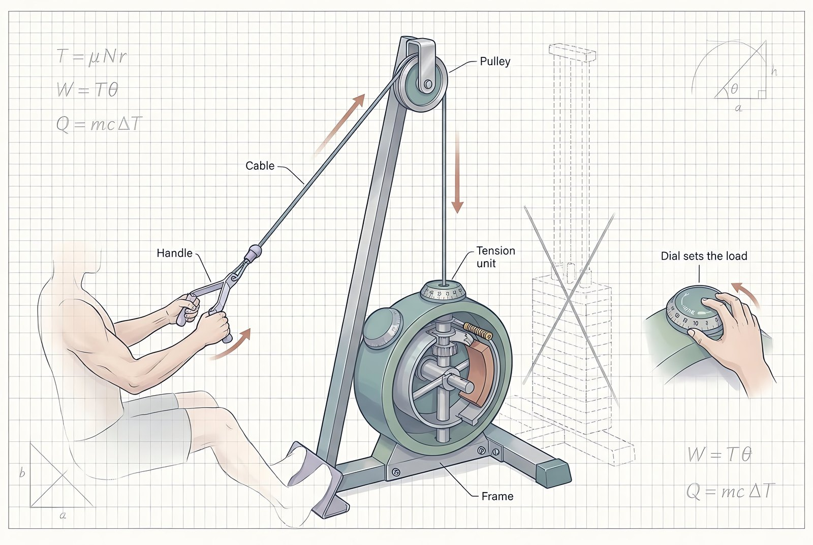
7. Stopping mid-repetition
The clearest difference between the three loads in Figure 1 is what happens when the user stops or lets go (Figure 8). We place the elbow at 90°, the hardest point of a curl with a dumbbell, at a 5 lb load, and compute the energy that is released.
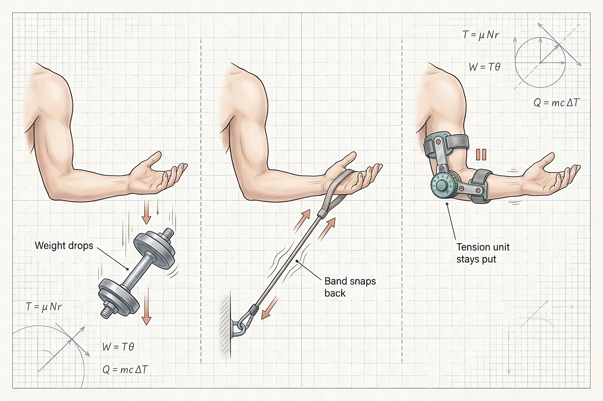
| Load | What happens | Energy released | Consequence |
|---|---|---|---|
| Dumbbell, muscle gives way | Arm and weight swing down | 10.3 J | Hand reaches 2.7 m/s at the bottom, in the joint's end range |
| Dumbbell, dropped from the hand | Falls 1.05 m | 23.4 J | 4.5 m/s at the floor or foot |
| Elastic band, released | Band recoils from 53% strain, 21 N | 4.1 J | Free end can reach tens of m/s in the ideal limit |
| Tension unit | Stops | 0.13 J of elastic windup | About 2° of spring-back |
| Cable machine, 100 lb stack at the top of a 0.6 m stroke | Stack falls | 267 J | Plates slam on the stack |
| Cable machine, tension unit with rewind spring | Handle retracts | 9 J | Light pull back |
| Cable machine, tension unit with rigid lever | Stops | 0 J | Lever stays put |
The windup figure assumes the clutch, shaft and brace arms together have a torsional stiffness of 200 N·m/rad; at 7.34 N·m they twist 2.1° and store 0.13 J, about 1% of what the dumbbell releases. The band's speed is an upper bound for a 20 g band with a third of its mass moving; real bands lose energy internally, but the order of magnitude is why released bands hurt.
A qualification. The unit adds no stored energy, but it holds only in the direction it resists. In a standing curl with a flexion-only brace (architecture A, or C with the straightening unit set to zero), gravity on the forearm pulls toward straightening, which is the free direction. The forearm and hand weigh about 1.8 kg, which at 90° is 3.0 N·m, or 2.0 lb at the grip. If the user relaxes, the forearm falls freely under its own weight. The brace makes nothing worse than an unbraced arm, but it does not hold the limb. To hold, the straightening direction must also be braked at about 2 lb or more; because static friction is higher than sliding friction (Section 11), a setting of about 1.7 lb already holds a resting forearm, with no margin. That holding setting also resists the user's own straightening, which is a training choice, not a free safety feature.
8. Resistance across the range
The three loads resist a curl in three shapes. For a dumbbell of weight W, with the upper arm vertical and θ the elbow angle from the hanging position, the torque is W L sin θ. For a band anchored under the foot and attached at the hand, the torque is the band tension, its tension at 100% elongation F100 times its strain ε, multiplied by its moment arm a about the elbow, both of which change with angle. For the friction unit it is the set torque T, the same at every angle and every speed:
We place the elbow 1.05 m above the floor, set the band just taut with the arm hanging, and scale all three to the same 5 lb peak. The band then needs about 40 N at 100% elongation, close to the silver grade in Uchida's measurements [15]. Table 4 and Figure 9 show the result.
| Elbow angle | Dumbbell | Band (strain) | Tension unit | Strength shape |
|---|---|---|---|---|
| 0° | 0.00 | 0.00 (0%) | 5.00 | 0.55 |
| 30° | 2.50 | 0.52 (9%) | 5.00 | 0.78 |
| 60° | 4.33 | 2.59 (29%) | 5.00 | 0.94 |
| 90° | 5.00 | 4.58 (53%) | 5.00 | 1.00 |
| 110° | 4.70 | 5.00 (67%) | 5.00 | 0.97 |
| 140° | 3.21 | 3.87 (83%) | 5.00 | 0.84 |
| Mean over the lift | 3.61 | 2.81 | 5.00 | |
| Work per lift | 13.0 J | 10.1 J | 17.9 J |
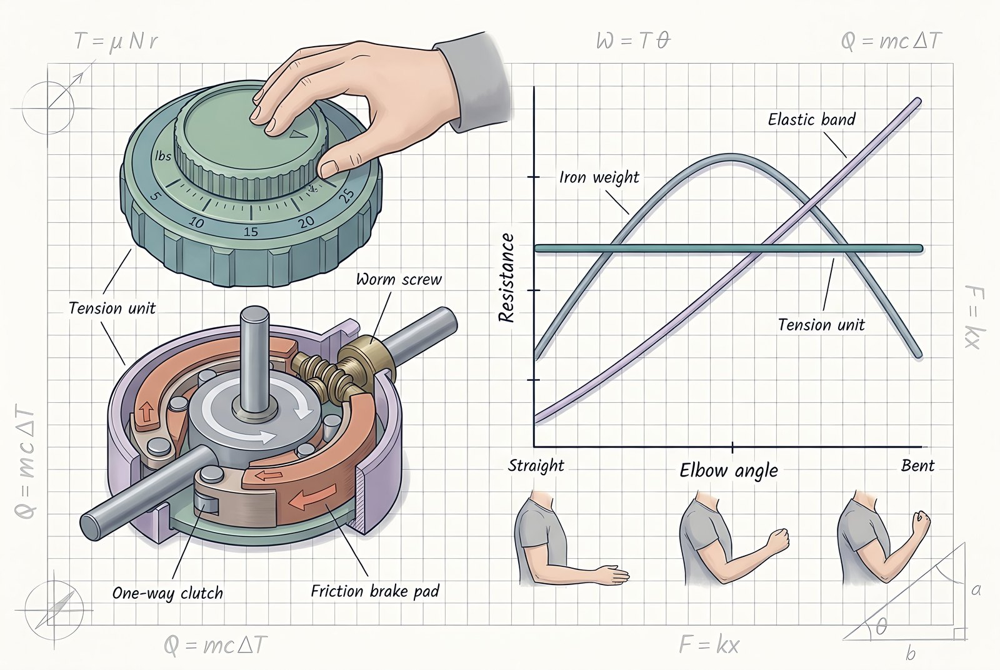
Three observations follow. First, at the same peak the flat unit asks for 1.38 times the dumbbell's work and 1.77 times the band's, because it does not let up near the ends of the range. The work per lift is simply
Second, the band does almost nothing for the first 30° when anchored this way, and peaks before its strain does, because its moment arm shrinks as the hand rises. Third, the unit's resistance does not depend on speed. A dumbbell adds inertial torque when accelerated: 0.51 lb at the start of a 2 s lift, 2.03 lb for 1 s, and 8.1 lb, 162% of its static peak, for a jerky 0.5 s lift. The friction unit adds nothing.
Flat is not the same as matched. The flat profile is not automatically better. A muscle's strength varies with angle [14], and what decides whether a person can finish a repetition is the hardest point: the angle at which the load is largest relative to strength. With the illustrative shape in Table 4 (peak at 90°, 55% of peak at full extension), the flat unit is hardest at full extension, where the flexors are weakest. If each load is set so that its hardest point is just achievable, the unit can be set to only 55% of peak strength, while the dumbbell, whose curve rises and falls with the muscle's, can be set to 100%. On that basis the dumbbell does 1.31 times the unit's work over a full 0 to 140° curl. Starting the curl at 20° or 30° narrows the gap to 1.16 and 1.09 times. For the elbow curl, then, the dumbbell's curve fits the muscle better than a flat one. The application's background says a band is weakest at the start of a movement "where many muscles are strongest"; for the elbow flexors in this model the start is where the muscle is weakest. The application discloses a processor that adjusts resistance to the user's performance, but not a resistance that follows joint angle, and we do not model one.
9. What friction cannot do: the lowering phase
A friction brake always opposes motion. It can take energy out of a movement but never put energy in. That has a consequence the model makes exact.
With a dumbbell, the flexors lift the weight (concentric work) and then lower it under control (eccentric work), absorbing the 13.0 J they put in. With a friction unit there is nothing to lower. Table 5 sets out who works in each phase of an elbow brace.
| Load | Lifting (flexion) | Lowering (extension) | Eccentric work per repetition |
|---|---|---|---|
| Dumbbell | Flexors, concentric | Flexors, eccentric | 13.0 J at 5 lb |
| Tension unit, flexion braked only (A) | Flexors, concentric | No load beyond the limb's weight | 0 J |
| Tension units, both directions braked (B or C) | Flexors, concentric | Extensors, concentric | 0 J |
When the straightening direction is braked, the user pushes the forearm down against it: the extensors shortening, concentric work for a different muscle. It trains the opposing muscle in the same session and doubles the work per cycle, as the application's description of both-phase resistance suggests, but it is not eccentric loading of the flexors, and no setting of a passive friction unit makes it so. The application's first figure labels the out-motion "eccentric extension", and its machine embodiment mentions protocols "for controlled eccentric loading". The model does not support either reading for a friction brake: eccentric work needs something that drives the limb, such as gravity on a mass, a stretched elastic element, a flywheel or a motor [5, 6, 8].
How much this matters depends on the use. Eccentric training is at least as effective as concentric training for strength and mass, and is used deliberately in rehabilitation of tendons and after surgery [10–13]. On the other hand, concentric-only work produces less delayed-onset soreness and less muscle damage [13], which may suit early rehabilitation and older users. A friction unit is a concentric training tool, in both directions if the brace has two units, and should be described that way.
10. Heat
Because nothing is stored, every joule the user puts into the unit becomes heat in the drum and pad. With a heat capacity C, a cooling conductance hA to air at temperature Ta, and the user's mechanical power P during a set,
The wearable unit. We assume 30 g of steel-equivalent metal is in thermal contact with the drum (drum, shaft, metal block and plate), 14.7 J/K, cooling from the outside of a 32 mm housing at 10 W/m²K, 32 mW/K, a time constant of 7.7 minutes. The session is three sets of 15 repetitions, 3 s each, through 140°, with a minute's rest, starting at 25 °C.
| Dial setting | Heat per repetition | Power during a set | Heat per session | Rise in one set, no cooling | Peak drum temperature |
|---|---|---|---|---|---|
| 1 lb | 3.6 J | 1.2 W | 161 J | 3.7 K | 33.5 °C |
| 2 lb | 7.2 J | 2.4 W | 323 J | 7.3 K | 41.9 °C |
| 5 lb | 17.9 J | 6.0 W | 807 J | 18.3 K | 67.4 °C |
| 5 lb, both directions in one unit (B) | 35.9 J | 12.0 W | 1,614 J | 36.6 K | 109.7 °C |
| 5 lb, 60 g heat mass | 17.9 J | 6.0 W | 807 J | 9.1 K | 49.0 °C |
| 5 lb, 100 g heat mass | 17.9 J | 6.0 W | 807 J | 5.5 K | 40.2 °C |
At 1 to 2 lb heat is not a problem. At 5 lb it is: a bottle-cap unit reaches about 67 °C after three sets, and architecture B, with both directions' heat in one drum, about 110 °C. Skin contact with surfaces above roughly 43 to 48 °C for minutes to hours can burn [20], and this unit sits against the limb. The housing must insulate the drum, or its heat mass must double or triple. Architecture C, one unit per direction, halves each drum's heat and is the better choice thermally. The application gives materials but no thermal design; this is a requirement the model adds.
The gym unit. A 100 lb cable stroke of 0.6 m puts 267 J into the drum on every repetition, 89 W during a set. We model five sets of ten repetitions with 90 s rests, and also the steady state of a busy machine with a new set every two minutes.
| Load at the handle | Heat per rep | Power in a set | Wearable-size unit | 0.5 kg drum, 0.020 m² | 1 kg drum, 0.040 m² | 2 kg drum, 0.063 m² |
|---|---|---|---|---|---|---|
| 20 lb | 53 J | 18 W | 128 / 141 °C | 34 / 44 °C | 29 / 34 °C | 27 / 31 °C |
| 50 lb | 133 J | 44 W | 282 / 315 °C | 47 / 71 °C | 36 / 48 °C | 31 / 40 °C |
| 100 lb | 267 J | 89 W | 539 / 604 °C | 68 / 118 °C | 47 / 71 °C | 36 / 54 °C |
The bottle-cap scale does not carry over to the gym. A drum of about 1 kg with 0.04 m² of exposed surface holds 100 lb sets under 50 °C and a busy machine near 70 °C. The binding constraint is not one set, which a few hundred grams of steel absorbs, but the steady state of repeated use, which surface area sets. Holding the drum 60 K under an assumed 150 °C ceiling for an organic pad on a machine used back to back takes 0.029 m² of drum surface at 100 lb (22 W average) and 0.057 m² at 200 lb (44 W), for example a 160 mm drum 28 or 57 mm wide. That is the size of a small motorcycle drum brake. The application already says a machine unit is larger and more robust; the model says how much larger, and it is still small next to a weight stack (Section 12). Friction-braked cycle ergometers, which dissipate a few hundred watts in a flywheel rim for an hour at a time, show that this is ordinary engineering [9].
11. How true is the dial?
The dial reads the preload: how far the worm has advanced the follower. The resistance the user feels is μ times that preload. Anything that changes μ or the preload without moving the dial changes the pounds.
Friction coefficient. The friction coefficient of a brake material is not a constant. It changes with temperature, humidity, sliding speed, the bedding-in of a new pad and its wear [17]. If the dial is calibrated at μ0, the true resistance is
| Actual μ | Shoe or pad | Error | Band, 270° wrap |
|---|---|---|---|
| 0.28 | 4.00 lb | −16.0 oz | 3.26 lb |
| 0.35 | 5.00 lb | 0 | 5.00 lb |
| 0.42 | 6.00 lb | +16.0 oz | 7.42 lb |
A ±15% swing in μ, modest for a friction material across temperature and wear, moves a 5 lb reading by ±12 oz, a 2 lb reading by ±4.8 oz and a 1 lb reading by ±2.4 oz. The band form, which needs far less actuating force, roughly doubles the error. The dial's resolution, under half an ounce per 10° of knob in our example, is far finer than its accuracy. The heat of Section 10 feeds directly into this: a drum that warms by 40 K during a session is a drum whose μ is changing during the session.
Wear. If the preload comes from compressing a stiff stack, as Eq. (3) assumes, pad wear relaxes it. At K = 2.0 N/µm, 10 µm of wear loses 20 N, 1.1% of the 5 lb setting; 50 µm loses 5.7%; 100 µm loses 11.4%. The reading stays where it was while the resistance falls.
Starting and sliding. Static friction is higher than kinetic friction, and many materials also lose friction as sliding speed rises from zero, which is the condition for stick-slip [18]. Assuming μs = 1.2 μk, a 5 lb setting needs 6.0 lb to start moving, and a 2 lb setting 2.4 lb. At breakaway the resisting torque drops by 1.47 N·m at 5 lb, and a forearm pushing at that moment accelerates at about 23 rad/s² until the muscle responds, about 1.6° in the first 50 ms. That is a small jerk at the start of every repetition and at every pause, and it is largest exactly when the hold-anywhere feature is used. At the slow speeds of early rehabilitation it can appear as stick-slip chatter if the pad material's friction falls with speed.
What follows. None of this is fatal, but a graduated dial on a friction unit is a repeatable setting, not a measurement. To be a number a therapist can prescribe, each unit needs calibration against torque, a pad material with stable μ over its working temperature, and periodic checks. The application's digital embodiment, with a force or torque sensor, would read the real resistance rather than the preload.
12. Mass, volume and the case for tension weights
Mass and volume. The obvious advantage of a tension unit is what it leaves out. A 200 lb selectorized stack is 91 kg of plates plus an assumed 12 kg of rods, top plate, selector and cable, 103 kg in a 0.35 × 0.25 × 1.80 m envelope of 158 L. A gym unit holding the 1 to 2 kg drum of Section 10 with its shaft, clutch, housing and worm we put at 4 kg in a 220 mm by 100 mm envelope of 3.8 L: 26 times lighter and 41 times smaller. The same 200 lb as loose plates is 11.6 L of solid iron. At the brace, a 5 lb dumbbell weighs 2.27 kg and a set from 1 to 5 lb 6.8 kg; a brace with two units covering 0 to 5 lb in each direction, an assumed 0.37 kg.
The unit's figures are assumptions about a design that does not exist; if it came out twice as heavy, the ratio would still exceed ten. The unit also works in any orientation. A weight resists only upward motion; the unit resists its set direction lying down, side on, overhead, or with no gravity at all, the reason flywheel and vacuum-cylinder devices were developed for spaceflight [5, 7].
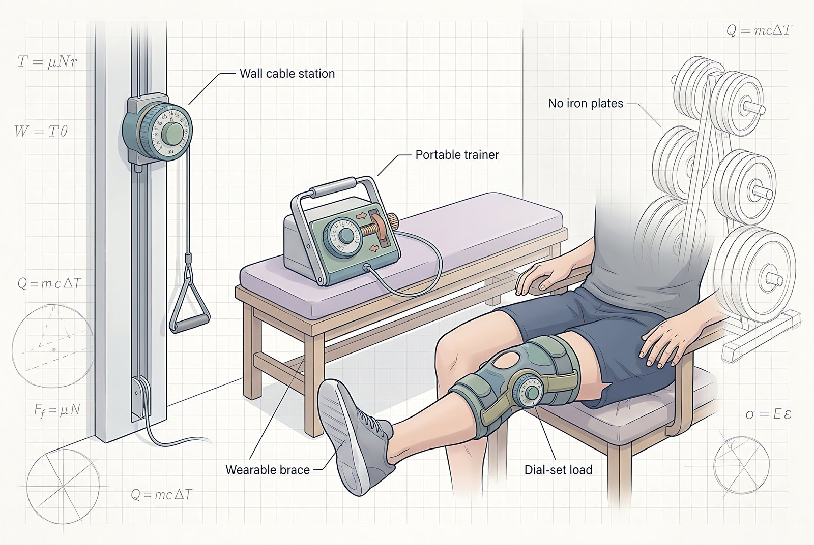
The case, weighed. Is the future of resistance training in tension weights rather than lifted mass? Table 9 collects what the model says.
| Property | Friction tension unit | Iron weight | Verdict |
|---|---|---|---|
| Mass and space for 200 lb | About 4 kg, 4 L | About 103 kg, 158 L | Unit, by 26× and 41× |
| Energy released if the user stops or lets go | 0 to 0.13 J | 10 to 267 J | Unit |
| Speed dependence | None | Adds up to 162% at a fast start | Unit, for safety and control |
| Orientation | Any, including no gravity | Upward only | Unit |
| Setting resolution | Under 0.5 oz per 10° of knob | Plate or dumbbell steps | Unit |
| Direction control | Each direction set separately, or one free | Same weight both ways | Unit |
| Work per lift at the same peak | 1.38× the dumbbell | 1.0 | Unit |
| Fit to the elbow strength curve | Flat; hardest at the weak end | Rises and falls with the muscle | Weight, by 1.31× in work at equal difficulty |
| Eccentric (lowering) load | None, in any architecture | Full | Weight |
| Heat | All work becomes heat; 1 kg drum for a gym | None | Weight |
| Accuracy of the number | ±12 oz at 5 lb per ±15% in μ, needs calibration | Exact, permanent | Weight |
| Smoothness at the start | Breakaway about 20% above setting | Smooth | Weight |
The honest reading is that a dial-set friction unit is a better source of concentric resistance than iron in most practical respects: far smaller and lighter, unable to fall or recoil, independent of gravity and speed, and finely settable for each direction. It is worse in three respects that engineering does not remove: no lowering phase, all work turned into heat, and a number that drifts with friction. For rehabilitation, home training and anywhere space or safety dominates, the trade looks favourable. For training built on eccentric overload it does not, and there the tension systems that can compete with iron are those with a motor that drives the limb, not a brake. A future in tension weights is plausible for a large part of resistance training, not all of it.
13. Limitations and evaluation plan
This is a design and analysis paper. Its limits should be plain.
No prototype. No unit, brace or machine of this kind has been built or tested. Every number above is modelled. The project site states the same: no bench torque data has been collected and no patient has used the device.
Dimensions are ours, not the application's. Beyond a bottle-cap size, a worm ratio range, materials and an eighth-turn example, every dimension is our assumption. A different design would move the numbers in Tables 2, 6 and 7 but not the structural findings: no eccentric load, all work to heat, and a reading that depends on μ follow from the physics.
The friction coefficient is the least certain number. Its value, its spread between units and its change with temperature and wear decide how true the dial is. Only a bench test can settle it.
The strength curve is illustrative. Another exercise, joint or person would change the 1.31 figure of Section 8, and for some a flat profile may fit better than a weight.
Thermal model is lumped. The pad surface runs hotter than the bulk drum, and the housing cooler; skin contact needs a measured surface temperature.
Use is not modelled. Whether patients set loads correctly at home and whether gym users accept a machine with no stack are questions for people, not equations.
The tests that would settle these questions, in order of cost:
| Stage | Test | Question answered |
|---|---|---|
| 1. Bench torque | Ten wearable units on an instrumented hinge with a load cell: torque against dial setting, angle and speed, including breakaway at slow speed and worm creep under vibration | What is μ and how repeatable is it? How linear is the dial? How large is the breakaway step? Does the setting hold? |
| 2. Thermal | Drum and housing-surface temperature through the session of Table 6, at 1, 2 and 5 lb, and for architectures B and C | Does the housing stay within skin-contact limits? How much does μ change as it warms? |
| 3. Durability | Accelerated cycling to 100,000 repetitions with periodic torque checks | How fast does the reading drift with wear? What service interval and recalibration are needed? |
| 4. Gym unit | A 1 to 2 kg drum unit on a cable frame, five sets at 100 lb and continuous back-to-back use | Does the drum stay under the pad's temperature ceiling? What does the handle force look like across a stroke? |
| 5. Users | Therapists and patients setting prescribed loads; gym users comparing the unit with a stack | Accuracy of self-set loads, perceived breakaway, acceptance of concentric-only resistance |
14. Conclusion
A friction brake behind a one-way clutch, its pressure set and held by a worm and read on a dial, makes training resistance without a weight. One unit resists one direction and frees the other; an outer and an inner brake in one unit, or two units on either side of a joint, set the two directions separately. The same mechanism fits in a brace and, built larger, replaces a weight stack.
The model finds the concept strong where its physics is simple. Stopping or letting go releases 0.13 J where a dumbbell releases 10 to 23 J and a weight stack 267 J. Resistance is flat and independent of speed and orientation, and at the same peak it asks 1.38 times a dumbbell's work per lift. A 200 lb gym unit is about 26 times lighter and 41 times smaller than a stack.
The model also finds where the concept, and the project's own material, go further than the numbers. Friction cannot load a muscle eccentrically; braking the return trains the opposing muscle concentrically, so the out-motion is not "eccentric" in the sense the application's first figure labels it. The brace holds wherever the user stops only in the direction it resists; a flexion-only brace lets a relaxed forearm fall under its own weight of about 2 lb at the grip. The site's "dialed to the ounce" describes the dial's resolution, not its accuracy: a ±15% change in friction moves a 5 lb reading by ±12 oz until each unit is calibrated. At 5 lb a bottle-cap unit heats to about 67 °C over three sets, 110 °C in the single-unit two-direction form, so the 0 to 5 lb range needs more heat mass or insulation than a bottle cap holds. For the elbow curl, a dumbbell's curve fits the muscle's strength curve better than a flat one.
The idea therefore looks best as a concentric resistance tool: a brace with two units, one per direction, for rehabilitation at light loads, and a cable machine with a drum of about a kilogram in place of a stack. Whether tension weights replace iron depends less on mechanics than on whether users accept resistance without a lowering phase. What remains is to put a unit on a torque bench, then on a limb.
The model is short and is published with this paper as model.py, so the assumptions can be changed and every table regenerated.
References
- N. A. Ratamess, B. A. Alvar, T. K. Evetoch, T. J. Housh, W. B. Kibler, W. J. Kraemer and N. T. Triplett, "Progression models in resistance training for healthy adults" (American College of Sports Medicine position stand), Medicine & Science in Sports & Exercise, vol. 41, no. 3, pp. 687–708, 2009. doi:10.1249/MSS.0b013e3181915670
- D. M. Frost, J. Cronin and R. U. Newton, "A biomechanical evaluation of resistance: fundamental concepts for training and sports performance," Sports Medicine, vol. 40, no. 4, pp. 303–326, 2010. doi:10.2165/11319420-000000000-00000
- D. T. McMaster, J. Cronin and M. McGuigan, "Forms of variable resistance training," Strength and Conditioning Journal, vol. 31, no. 1, pp. 50–64, 2009. doi:10.1519/SSC.0b013e318195ad32
- H. J. Hislop and J. J. Perrine, "The isokinetic concept of exercise," Physical Therapy, vol. 47, no. 2, pp. 114–117, 1967. doi:10.1093/ptj/47.2.114
- H. E. Berg and P. A. Tesch, "A gravity-independent ergometer to be used for resistance training in space," Aviation, Space, and Environmental Medicine, vol. 65, no. 8, pp. 752–756, 1994. PMID 7980338
- S. Maroto-Izquierdo, D. García-López, R. Fernandez-Gonzalo, O. C. Moreira, J. González-Gallego and J. A. de Paz, "Skeletal muscle functional and structural adaptations after eccentric overload flywheel resistance training: a systematic review and meta-analysis," Journal of Science and Medicine in Sport, vol. 20, no. 10, pp. 943–951, 2017. doi:10.1016/j.jsams.2017.03.004
- J. A. Loehr, S. M. C. Lee, K. L. English, J. Sibonga, S. M. Smith, B. A. Spiering and R. D. Hagan, "Musculoskeletal adaptations to training with the advanced resistive exercise device," Medicine & Science in Sports & Exercise, vol. 43, no. 1, pp. 146–156, 2011. doi:10.1249/MSS.0b013e3181e4f161
- P. Maciejasz, J. Eschweiler, K. Gerlach-Hahn, A. Jansen-Troy and S. Leonhardt, "A survey on robotic devices for upper limb rehabilitation," Journal of NeuroEngineering and Rehabilitation, vol. 11, 3, 2014. doi:10.1186/1743-0003-11-3
- B. F. Maxwell, R. T. Withers, A. H. Ilsley, M. J. Wakim, G. F. Woods and L. Day, "Dynamic calibration of mechanically, air- and electromagnetically braked cycle ergometers," European Journal of Applied Physiology and Occupational Physiology, vol. 78, no. 4, pp. 346–352, 1998. doi:10.1007/s004210050430
- M. Roig, K. O'Brien, G. Kirk, R. Murray, P. McKinnon, B. Shadgan and W. D. Reid, "The effects of eccentric versus concentric resistance training on muscle strength and mass in healthy adults: a systematic review with meta-analysis," British Journal of Sports Medicine, vol. 43, no. 8, pp. 556–568, 2009. doi:10.1136/bjsm.2008.051417
- J. Douglas, S. Pearson, A. Ross and M. McGuigan, "Chronic adaptations to eccentric training: a systematic review," Sports Medicine, vol. 47, no. 5, pp. 917–941, 2017. doi:10.1007/s40279-016-0628-4
- P. C. LaStayo, J. M. Woolf, M. D. Lewek, L. Snyder-Mackler, T. Reich and S. L. Lindstedt, "Eccentric muscle contractions: their contribution to injury, prevention, rehabilitation, and sport," Journal of Orthopaedic & Sports Physical Therapy, vol. 33, no. 10, pp. 557–571, 2003. doi:10.2519/jospt.2003.33.10.557
- S. Hody, J.-L. Croisier, T. Bury, B. Rogister and P. Leprince, "Eccentric muscle contractions: risks and benefits," Frontiers in Physiology, vol. 10, 536, 2019. doi:10.3389/fphys.2019.00536
- K. Kulig, J. G. Andrews and J. G. Hay, "Human strength curves," Exercise and Sport Sciences Reviews, vol. 12, pp. 417–466, 1984. PMID 6376139
- M. C. Uchida, M. M. Nishida, R. A. C. Sampaio, T. Moritani and H. Arai, "Thera-band® elastic band tension: reference values for physical activity," Journal of Physical Therapy Science, vol. 28, no. 4, pp. 1266–1271, 2016. doi:10.1589/jpts.28.1266
- R. Limpert, Brake Design and Safety, 3rd ed., SAE International, Warrendale, PA, 2011. ISBN 978-0-7680-3438-7.
- P. J. Blau, "Compositions, functions, and testing of friction brake materials and their additives," Oak Ridge National Laboratory, report ORNL/TM-2001/64, 2001. doi:10.2172/788356
- B. Armstrong-Hélouvry, P. Dupont and C. Canudas de Wit, "A survey of models, analysis tools and compensation methods for the control of machines with friction," Automatica, vol. 30, no. 7, pp. 1083–1138, 1994. doi:10.1016/0005-1098(94)90209-7
- R. G. Budynas and J. K. Nisbett, Shigley's Mechanical Engineering Design, 11th ed., McGraw-Hill Education, New York, 2020. ISBN 978-0-07-339820-4.
- International Organization for Standardization, "Ergonomics of the thermal environment — Methods for the assessment of human responses to contact with surfaces — Part 1: Hot surfaces," ISO 13732-1:2006. iso.org/standard/43558.html
- J. F. Airy and T. D. Kadavy (Soma Dynamics Corp.), "Exercise device," U.S. Patent 4,718,665 A, 1988. patents.google.com/patent/US4718665A
- D. E. Knoth (Mauch Laboratories, Inc.), "Limb brace with adjustable hydraulic resistance unit," U.S. Patent 5,472,412 A, 1995. patents.google.com/patent/US5472412A
- M. C. Longo, J. C. Vukich and J. A. Genova, "Adjustable resistance knee rehabilitating and strengthening apparatus," U.S. Patent 5,358,468 A, 1994. patents.google.com/patent/US5358468A
- P. Tran, "Adjustable resistance joint brace," U.S. Patent 8,753,301 B2, 2014. patents.google.com/patent/US8753301B2
- S. M. Cersonsky, "Resistance brace," U.S. Patent 9,289,640 B2, 2016. patents.google.com/patent/US9289640B2
- T. R. Weltner, R. D. Curley Jr. and M. T. Ingersoll (DeRoyal Industries, Inc.), "Brace with worm gear," U.S. Patent 7,473,234 B1, 2009. patents.google.com/patent/US7473234
- M. Deharde and K. Patchel (Ultraflex Systems Inc.), "Multi-functional dynamic splint," U.S. Patent 5,658,241 A, 1997. patents.google.com/patent/US5658241A
- C. Krishnan, E. P. Washabaugh IV, R. B. Gillespie, S. Goretski, S. Abdulhamid and E. Mays (The Regents of the University of Michigan), "Wearable resistive device for functional strength training," U.S. Patent 10,507,351 B2, 2019. patents.google.com/patent/US10507351B2
- P. Svensson and P. Yaskowski (Pure Fishing, Inc.), "IAR drag release," U.S. Patent 8,807,471 B2, 2014. patents.google.com/patent/US8807471B2
- L. E. Paulos and K. A. Nelson, "Elastic brace assembly and methods of use," U.S. Patent 9,554,934 B2, 2017. patents.google.com/patent/US9554934B2
- F. Yao (New York University), "Exercise garment with ergonomic and modifiable resistance bands," U.S. Patent 9,895,569 B2, 2018. patents.google.com/patent/US9895569B2
- K. von Hoffmann and G. von Hoffmann (Tau Orthopedics LLC), "Low profile passive exercise garment," U.S. Patent 9,770,617 B2, 2017. patents.google.com/patent/US9770617B2
How to cite
B. Goldstein, "Resistance Without a Weight: A Dial-Set, Direction-Dependent Friction Unit for Rehabilitation Braces and Gym Machines," Benny Labs Foundation working paper, November 2026. https://doi.org/10.5281/zenodo.24565449